Chapter 15 XAI (説明可能な AI)
本章の内容は, 授業の R 演習スクリプト R_xai_dist.R に対応する.
深層学習に代表される「予測精度」を追求する (機械学習を含む) AI のモデルは, 「高精度」な一方「ブラックボックス」なものが多い. しかし, これらのモデル・アルゴリズムの実用化に際して, 特に, 医療・金融・司法など人のいのちや財産, 社会秩序に関する領域などにおいては, 「説明責任」「透明性」が強く求められる. XAI (Explainable AI) は, AI 研究の一領域として登場し, AI の予測力の向上に伴い, 2010年代後半頃から活発に研究が行われるようになってきている.
XAI の進展の裏にある社会的・倫理的な背景として, 欧州を中心に, AI の開発・利用に対して, 意思決定の過程がわかること (透明性), 人間がモデルの判断に責任を持てること (説明責任), 差別やバイアスがないこと (公正性), 利用者が安心して使えること (信頼性) などを求める機運の高まりがある (国際・国内のガイドラインとして, EU: Art. 22 GDPR, OECD: AI原則 (2019), 内閣府: 人間中心のAI社会原則 (2019), 等). 金融では, 与信判断の理由を顧客に説明することや, モデル・リスク管理の観点から, モデルの挙動を把握しておくことが求められる.
このような AI 技術を取り巻く世界的な潮流の中, XAI は, 「ブラックボックス」である AI を「解釈可能」にすることを目的とする方法 (論) の総称を指す.
本章では, XAI の以下の手法を取り上げ, パッケージimlを用いて実際に動かしてみる. いずれも, 予測モデルの種類によらずに使える方法 (model-agnostic) である.
- 大域的な説明 (モデル全体の挙動)
- PFI (Permutation Feature Importance)
- PDP (Partial Dependence Plot)
- 局所的な説明 (個々のデータ点の予測)
- ICE (Individual Conditional Expectation)
- LIME (Local Interpretable Model-agnostic Explanations)
- SHAP (SHapley Additive exPlanations)
本章の主要な参考資料:
- https://cran.r-project.org/web/packages/iml/vignettes/intro.html
- C. Molnar, Interpretable Machine Learning, https://christophm.github.io/interpretable-ml-book/
library(tidyverse)
library(randomForest)
# install.packages('iml')
library(iml) # 機械学習モデルの解釈 (PFI, PDP, ICE, LIME, SHAP)15.1 基本操作
データ: 社債の信用スプレッド (仮想データ)
一般化加法モデル (GAM) の章と同じデータである. スプレッドは, 信用リスクの構造モデル (Merton モデル) の考え方で作られている: 株価ボラティリティとレバレッジから資産ボラティリティ (= 株価ボラティリティ × (1 − レバレッジ)) とデフォルト距離を計算し, デフォルト確率からスプレッドを決める. このため, スプレッドはレバレッジやボラティリティに対して非線形に増加し, 両者の交互作用も含む. これに, 残存期間 (長いほど大きい, 対数的に増加), 企業規模 (大きいほど小さい), 業種 (公益は小さい) の効果を加えている. 仮想データなので「正解」が分かっており, XAI の結果が正しく構造を捉えているかを確認できる.
bond_spread.csv: 600銘柄
- spread: 信用スプレッド (bp) (目的変数)
- leverage: 負債比率 (%), equity_vol: 株価ボラティリティ (%), maturity: 残存期間 (年)
- log_assets: 総資産 (対数), industry: 業種 ("manuf": 製造業 / "nonmanuf": 非製造業 / "utility": 公益)bond <- read.csv("class/bond_spread.csv", stringsAsFactors = TRUE)
summary(bond)
#> spread leverage equity_vol maturity
#> Min. : 3.00 Min. : 5.00 Min. :12.00 Min. : 1.10
#> 1st Qu.: 51.50 1st Qu.:24.07 1st Qu.:22.90 1st Qu.: 6.00
#> Median : 68.60 Median :40.20 Median :28.20 Median :10.40
#> Mean : 85.79 Mean :40.21 Mean :29.61 Mean :10.52
#> 3rd Qu.: 99.08 3rd Qu.:54.52 3rd Qu.:35.00 3rd Qu.:15.10
#> Max. :399.00 Max. :85.00 Max. :66.50 Max. :20.00
#> log_assets industry
#> Min. : 7.63 manuf :273
#> 1st Qu.:10.17 nonmanuf:238
#> Median :11.01 utility : 89
#> Mean :11.01
#> 3rd Qu.:11.84
#> Max. :14.54ベースラインとブラックボックス・モデル
はじめに, 比較のためのベースラインとして, 線形回帰を実行しておく. 線形回帰では, 係数がそのまま「解釈」になる.
fit_lm <- lm(spread ~ ., data = bond)
summary(fit_lm)
#>
#> Call:
#> lm(formula = spread ~ ., data = bond)
#>
#> Residuals:
#> Min 1Q Median 3Q Max
#> -80.278 -17.984 -4.935 13.928 127.398
#>
#> Coefficients:
#> Estimate Std. Error t value Pr(>|t|)
#> (Intercept) -44.45709 11.21034 -3.966 8.21e-05 ***
#> leverage 1.05497 0.05888 17.918 < 2e-16 ***
#> equity_vol 4.92080 0.12794 38.463 < 2e-16 ***
#> maturity 1.08810 0.21488 5.064 5.49e-07 ***
#> log_assets -6.14400 0.95746 -6.417 2.85e-10 ***
#> industrynonmanuf 2.64075 2.46991 1.069 0.285
#> industryutility -18.36033 3.40994 -5.384 1.05e-07 ***
#> ---
#> Signif. codes: 0 '***' 0.001 '**' 0.01 '*' 0.05 '.' 0.1 ' ' 1
#>
#> Residual standard error: 27.83 on 593 degrees of freedom
#> Multiple R-squared: 0.768, Adjusted R-squared: 0.7657
#> F-statistic: 327.2 on 6 and 593 DF, p-value: < 2.2e-16レバレッジが 1%ポイント高いとスプレッドは約1.1bp, 株価ボラティリティが 1%ポイント高いと約4.9bp 大きく, 総資産が大きい (信用力の高い大企業) ほど, 公益業種ほどスプレッドが小さい. 符号はいずれもファイナンスの直感と整合的だが, 線形回帰では「ボラティリティが高い企業ほど, 1%ポイントの上昇の影響が大きい」といった非線形性や交互作用は表現できない.
XAI を適用する「ブラックボックス」のモデルとして, ランダムフォレストを使う.
set.seed(123) # 乱数を使う関数の直前で設定する
fit_rf <- randomForest(spread ~ ., data = bond, importance = TRUE)
fit_rf # OOB による MSE, 決定係数
#>
#> Call:
#> randomForest(formula = spread ~ ., data = bond, importance = TRUE)
#> Type of random forest: regression
#> Number of trees: 500
#> No. of variables tried at each split: 1
#>
#> Mean of squared residuals: 738.0505
#> % Var explained: 77.63OOB による決定係数 (% Var explained) は約78%である.
ちなみに, パッケージimlを使わずとも, パッケージrandomForestの関数randomForest()の出力に関数varImpPlot(), importance()を適用することで, 予測の精度に大きく影響を与える変数を調べることができる (変数重要度, variable importance, または特徴量重要度, feature importance).
ただし, これはランダムフォレストに固有の (モデル依存型の) 指標である.
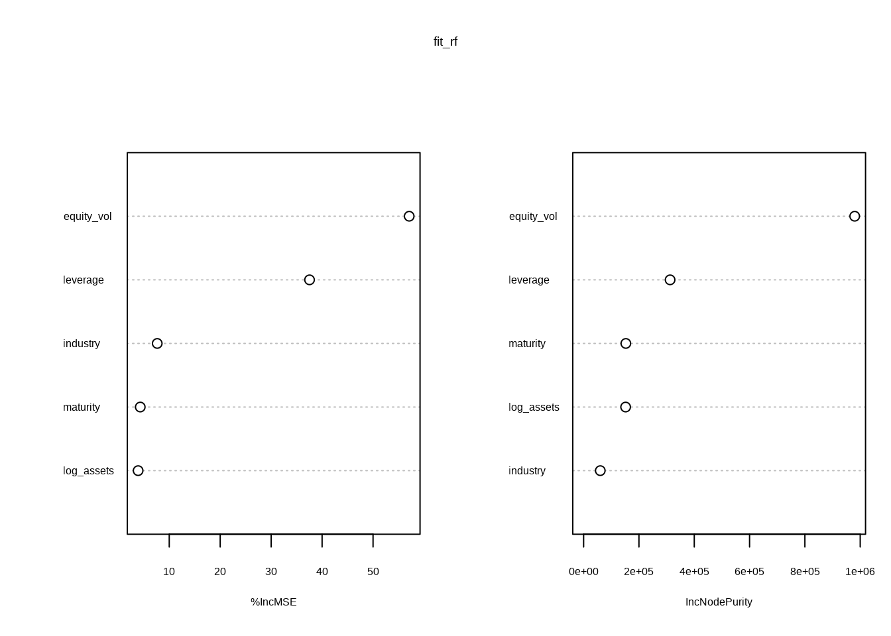
importance(fit_rf)
#> %IncMSE IncNodePurity
#> leverage 37.535576 312671.95
#> equity_vol 57.094392 980111.97
#> maturity 4.315564 152645.74
#> log_assets 3.895640 151857.53
#> industry 7.647373 60225.62%IncMSE: OOB (Out-Of-Bag) データで, その変数の値をランダムに並べ替えたときの MSE の増加を, 全ての木にわたって標準化した値 (分類問題では誤分類率を使う).IncNodePurity: その変数による木の分岐での RSS (分類問題ではジニ不純度) の減少の合計.
15.2 PFI
PFI (Permutation Feature Importance) は, ある特徴量の値をデータ点の間でランダムに並べ替えたとき, 予測誤差がどれだけ大きくなるかで, その特徴量の重要度を測る.
set.seed(111) # 並べ替えは乱数で行う
imp <- FeatureImp$new(predictor, loss = "mae") # 損失関数: MAE ('mse' なども可)
imp$plot()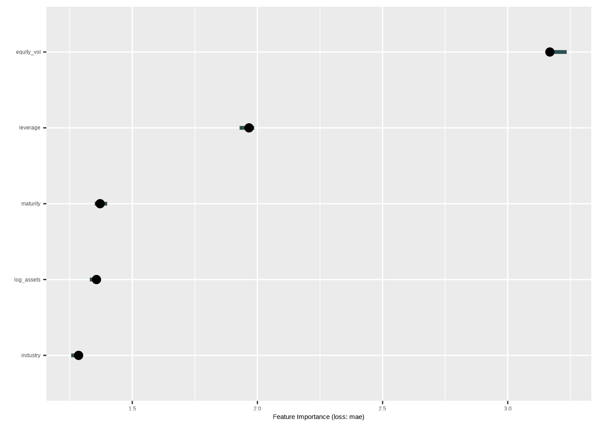
imp$results
#> feature importance.05 importance importance.95 permutation.error
#> 1 equity_vol 3.160594 3.168184 3.235535 38.00651
#> 2 leverage 1.928712 1.966275 1.987003 23.58804
#> 3 maturity 1.350277 1.371481 1.399634 16.45271
#> 4 log_assets 1.330359 1.356967 1.370515 16.27859
#> 5 industry 1.255971 1.285521 1.290604 15.42150importance は (並べ替え後の誤差) / (元の誤差) であり, 1 に近い特徴量は予測にほとんど寄与していない.
この結果では, equity_vol (並べ替えると誤差が約3.2倍), leverage の重要度が大きく, 構造モデルでデフォルト確率を決める2つの変数が上位に来ている.
残存期間, 企業規模, 業種の重要度は小さいが, 1 よりは大きく, 予測に一定の寄与をしている.
15.3 PDP と ICE
PDP
PDP (Partial Dependence Plot) は, ある特徴量の値を変えたときに, 予測値が (他の特徴量について平均して) どう変わるかを描く.
pdp <- FeatureEffect$new(predictor, feature = "equity_vol", method = "pdp", grid.size = 20)
pdp$plot()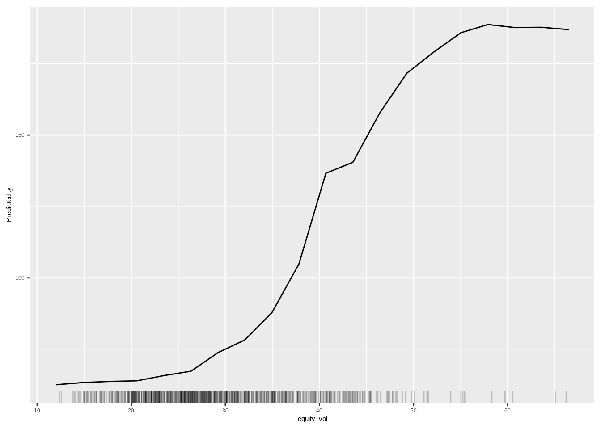
他の特徴量に対する PDP は, $set.feature() で特徴量を切り替えて描ける.
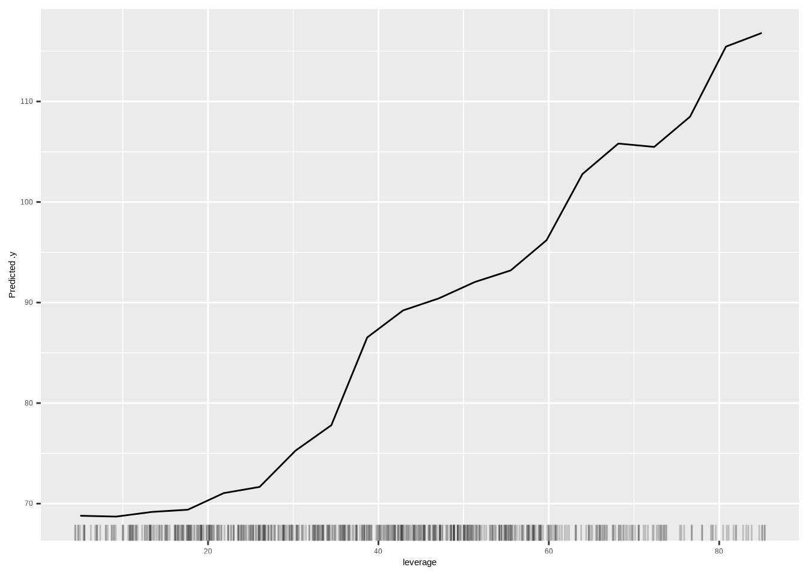
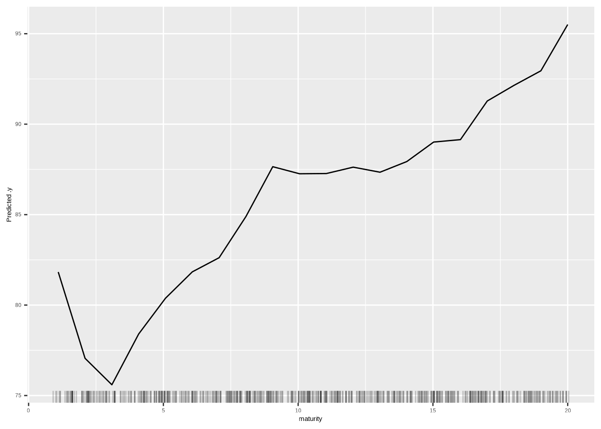
線形回帰の係数は「1単位増えたときの一定の変化」しか表さないが, PDP からは次のような非線形な関係が読み取れる.
- 株価ボラティリティ: 25%程度まではスプレッドはほぼ一定 (約63〜67bp) だが, 30〜45%で急に拡大し, 55%以上では約190bp で頭打ちになる. ボラティリティが低いうちはデフォルト確率がほぼ 0 で, 一定水準を超えるとデフォルト距離が縮まってデフォルト確率が急に高まる, という構造モデルの性質 (凸性) と整合的である. 一方, 高い領域での頭打ちは, データが少ない (第3四分位点は35%) ためと, ランダムフォレストが学習データの範囲外を外挿できない (予測値は学習データの平均の組合せになる) ためで, 実際の関係を表すものではない.
- レバレッジ: 約69bp から約117bp まで, ボラティリティより緩やかに増加する (35〜40%付近で傾きが大きくなる).
- 残存期間: 長いほど緩やかに大きくなる. 投資適格の社債で, 信用スプレッドの期間構造が右上がりになるのと整合的である. ただし, 1〜3年でいったん下がる部分は, 生成モデル (対数的に単調増加) にはなく, 推定の誤差である.
ICE
データ点ごとの, 特徴量に対する予測値の変化は, ICE (Individual Conditional Expectation) で知ることができる.
method = "pdp+ice" とすると, 個々の銘柄ごとの曲線 (ICE) と, その平均 (PDP, 太線) を同時に描く.
ice <- FeatureEffect$new(predictor, feature = "leverage", method = "pdp+ice", grid.size = 20)
ice$plot()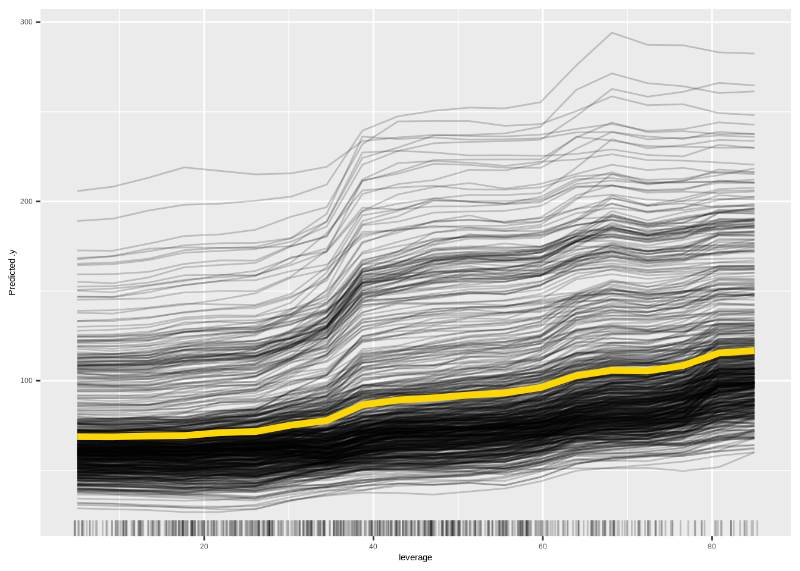
個々の曲線の高さが違うのは, 他の特徴量 (特にボラティリティ) の値が銘柄ごとに違うためである. 曲線が平行に上下にずれているだけなら, レバレッジの効果は銘柄によらず同じ (加法的) だが, ここでは, 曲線の傾き (レバレッジが上がったときの増え方) も銘柄によって違う. これは, レバレッジの効果が他の特徴量の値によって変わる, すなわち交互作用があることを示す.
2つの特徴量の PDP
2つの特徴量を同時に指定すると, 交互作用を確認できる.
pdp2 <- FeatureEffect$new(predictor, feature = c("leverage", "equity_vol"), method = "pdp",
grid.size = 15)
pdp2$plot()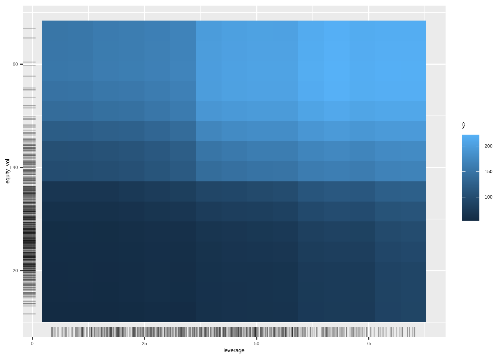
色の濃さが予測スプレッドを表す. 数値で見ると, ボラティリティが最も低い (12%) 銘柄では, レバレッジが 5% から 85% に上がってもスプレッドは約54bp から約89bp へ (約35bp) しか増えないが, ボラティリティが最も高い (66.5%) 銘柄では約152bp から約218bp へ (約66bp) 増える. すなわち, レバレッジの効果は, ボラティリティが高いほど大きい (右上ほど色の変化が急になる). 構造モデルでは, デフォルト距離は「負債までの余裕 (レバレッジ)」を「資産価値の変動の大きさ (ボラティリティ)」で割ったものであり, 両方が悪い企業ほどデフォルト確率が非線形に高まるので, 自然な結果である.
注) PDP は, 他の特徴量の分布を固定したまま1つの特徴量の値を動かすので, 特徴量どうしの相関が強いと, 現実にはあり得ない組合せ (例: 低レバレッジなのに高ボラティリティ) での予測値を平均してしまう. このデータでは, レバレッジとボラティリティの相関は 0.04 とほぼ無相関なので, その心配は小さい.
15.4 LIME
局所代理モデルの一手法である LIME (Local Interpretable Model-agnostic Explanations) は, 説明したいデータ点の近くでブラックボックス・モデルを単純なモデル (線形モデルなど) で近似し, その係数で予測を説明する.
パッケージimlでは, その一種を関数LocalModel$new()で実行する.
LocalModel():
- LIME の一種. 局所的な重み付き回帰モデルによる近似
- 説明したいデータ点からの距離で重み付け
- 回帰問題は線形回帰, 分類問題はロジスティック回帰
- L1 正則化 (lasso) で使う特徴量を絞る (内部で関数 glmnet() を使用)
- 標準の LIME との違い
- 近傍データとして, 乱数で作るのではなく, 元のデータを使う
- ユークリッド距離に基づくカーネルではなく, Gower 距離で近さを測る (パッケージ gower が必要)1番目の銘柄の予測に対する説明 (k: 使う特徴量の数):
# install.packages('gower')
lime_explain <- LocalModel$new(predictor, x.interest = X[1, ], k = 3)
lime_explain$results
#> beta x.recoded effect x.original feature
#> leverage 0.65162460 11.9 7.7543327 11.9 leverage
#> equity_vol 3.28905996 60.5 198.9881275 60.5 equity_vol
#> maturity 0.07119467 9.2 0.6549909 9.2 maturity
#> feature.value
#> leverage leverage=11.9
#> equity_vol equity_vol=60.5
#> maturity maturity=9.2
lime_explain$plot()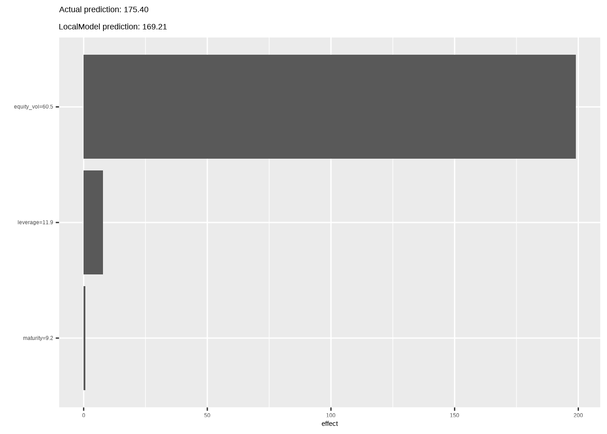
predict(lime_explain) # 局所線形モデルによる予測値
#> prediction
#> 1 169.214
predict(fit_rf, bond[1, ]) # ランダムフォレストの予測値
#> 1
#> 175.4043beta が局所線形モデルの係数, effect が係数 × 特徴量の値で, 横棒グラフで示されている.
1番目の銘柄は, レバレッジが 11.9% と低い一方, 株価ボラティリティが 60.5% と非常に高く, ランダムフォレストの予測スプレッドは約175bp と大きい.
LIME は, 予測に使う特徴量としてボラティリティ, レバレッジ, 残存期間の3つを選び, この銘柄の周りでは「ボラティリティが 1%ポイント高いとスプレッドが約3.3bp 大きい」と説明している.
effect を見ると, ボラティリティの寄与 (約199bp) が圧倒的に大きく, 「この銘柄のスプレッドが大きいのは, ボラティリティが高いため」という説明になる.
ただし, 読み取りには次の注意が必要である.
effectは「特徴量の値が 0 の場合」との比較であり, 平均的な銘柄との比較ではない (切片も表示されない). このため, レバレッジのeffectは (平均より低いのに) プラスになっている. 次の SHAP と比べてみよう.- 局所線形モデルの予測値 (約169bp) は, ランダムフォレストの予測値 (約175bp) とおおむね近いが, 一致はしない.
別のデータ点の説明は, $explain() で求める.
lime_explain$explain(X[2, ])
lime_explain$results
#> beta x.recoded effect x.original feature
#> leverage 0.60595506 28.9 17.5121012 28.9 leverage
#> equity_vol 3.19204341 30.7 97.9957326 30.7 equity_vol
#> maturity 0.05061844 8.8 0.4454422 8.8 maturity
#> feature.value
#> leverage leverage=28.9
#> equity_vol equity_vol=30.7
#> maturity maturity=8.8
lime_explain$plot()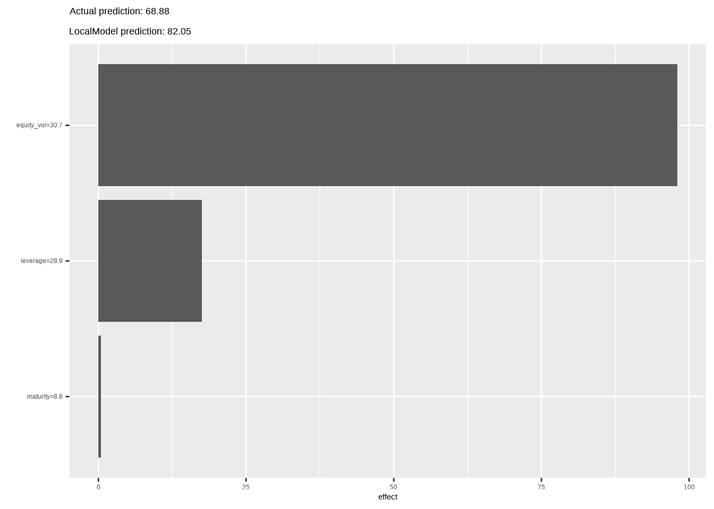
2番目の銘柄 (レバレッジ 28.9%, ボラティリティ 30.7%) では, 局所線形モデルの予測値 (約82bp) とランダムフォレストの予測値 (約69bp) の差が大きく, 近似があまり良くない.
また, 係数 (beta) は1番目の銘柄とほぼ同じである.
PDP で見たように, ボラティリティの効果は 30%付近では急で 60%付近では平らなはずなので, LIME の係数は「その銘柄のごく近く」の傾きというより, かなり広い範囲の平均的な傾きになっている.
LocalModel$new() は元のデータ全体を Gower 距離で重み付けして使うので, 近傍の範囲が広くなりやすい.
LIME の結果は, 近傍の取り方 (カーネルの幅) に依存し, 不安定になりやすいことが知られている.
ただし, LIME ではデータ点ごとに異なる代理モデルで説明するので, 異なるデータ点の間で結果を直接比較することは, 元来想定されていない. 異なるデータ点を比較したい場合には, 先の ICE や, 次の SHAP などが有効である.
15.5 SHAP
SHAP (SHapley Additive exPlanations) は, 協力ゲーム理論の Shapley 値に基づいて, データ点に対するモデルの予測値を, 予測値の平均と各特徴量の「貢献度」の和に分解する方法である. \[ \hat{f}(\mathbf{x}_i) = E[\hat{f}(\mathbf{X})] + \phi_{leverage} + \phi_{equity\_vol} + \cdots + \phi_{industry} \]
局所的な説明
1番目の銘柄の予測値を, 各特徴量の貢献度に分解する.
X[1, ]
#> leverage equity_vol maturity log_assets industry
#> 1 11.9 60.5 9.2 10.69 nonmanuf
predict(fit_rf, bond[1, ]) # 予測値
#> 1
#> 175.4043
mean(predict(fit_rf)) # 予測値の平均 (ベースライン)
#> [1] 85.17802
set.seed(222)
shapley <- Shapley$new(predictor, x.interest = X[1, ], sample.size = 100)
shapley$plot()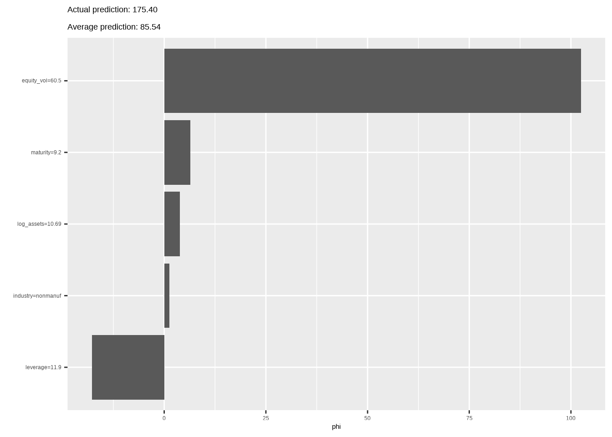
shapley$results
#> feature phi phi.var feature.value
#> 1 leverage -17.754215 495.08239 leverage=11.9
#> 2 equity_vol 102.448308 684.87448 equity_vol=60.5
#> 3 maturity 6.465599 103.49851 maturity=9.2
#> 4 log_assets 3.866448 52.99302 log_assets=10.69
#> 5 industry 1.260824 98.92527 industry=nonmanuf
sum(shapley$results$phi) # = 予測値 - 予測値の平均 (近似的に)
#> [1] 96.28696出力のうち, Shapley 値は phi を読めばよい.
1番目の銘柄の予測スプレッド (約175bp) は, 平均的な予測値 (約86bp) より約90bp 大きい. その内訳は, 株価ボラティリティ (60.5%) が約 +102bp と大部分を占め, レバレッジ (11.9%, 平均の約40%より低い) は約 −18bp と, スプレッドを小さくする方向に働いている. 総資産 (対数で 10.69, 中央値 11.01 よりやや小さい) と残存期間は小さなプラスである. LIME ではレバレッジの寄与がプラスだったが, SHAP は「平均的な銘柄と比べて」の寄与なので, 平均より低いレバレッジはマイナスの寄与になる. 「ボラティリティが高いことがスプレッドを大きく押し上げ, 低レバレッジがそれを一部打ち消している」という, ファイナンス的に自然な説明が得られる.
phi.var はモンテカルロ標本から計算される寄与の分散で, 小さいほど推定の信頼性が高い.
feature.value は, 指定したデータ点における各特徴量の値である.
ここでは, ボラティリティの phi.var は約680 (標準偏差で約26bp) と大きく, sample.size = 100 では推定の誤差がかなりあることに注意する.
Shapley 値の合計 (96.3) は, 予測値と予測値の平均の差 (89.9) に近似的に一致する.
ずれは, 下の注にあるモンテカルロ法による近似の誤差である (sample.size を大きくすると小さくなる).
なお, predict(fit_rf) のように新しいデータを指定しないと, ランダムフォレストは OOB による予測値を返す.
iml が基準とする平均は, 全データに対する予測値の平均 mean(predict(fit_rf, newdata = bond)) (= 85.54) で, OOB による予測値の平均 (85.18) とはわずかに異なる.
注) Shapley 値の厳密な計算には, 特徴量の全ての組合せについて計算する必要があり, 特徴量が多いと計算量が爆発する. そこで, iml の Shapley$new() は, 引数sample.sizeで指定した回数だけランダムに組合せを生成して近似値を計算する (大きいほど正確だが, 計算時間が増える). 結果を再現するためには, Shapley$new() の直前に set.seed() で乱数を固定する.
別の銘柄 (例: スプレッドが最も大きい銘柄) の説明は, $explain() で求める.
i_max <- which.max(bond$spread)
bond[i_max, ] # 実際のスプレッド
#> spread leverage equity_vol maturity log_assets industry
#> 306 399 68.1 59.9 15.1 11.33 nonmanuf
predict(fit_rf, bond[i_max, ]) # 予測値
#> 306
#> 296.601
shapley$explain(x.interest = X[i_max, ])
shapley$plot()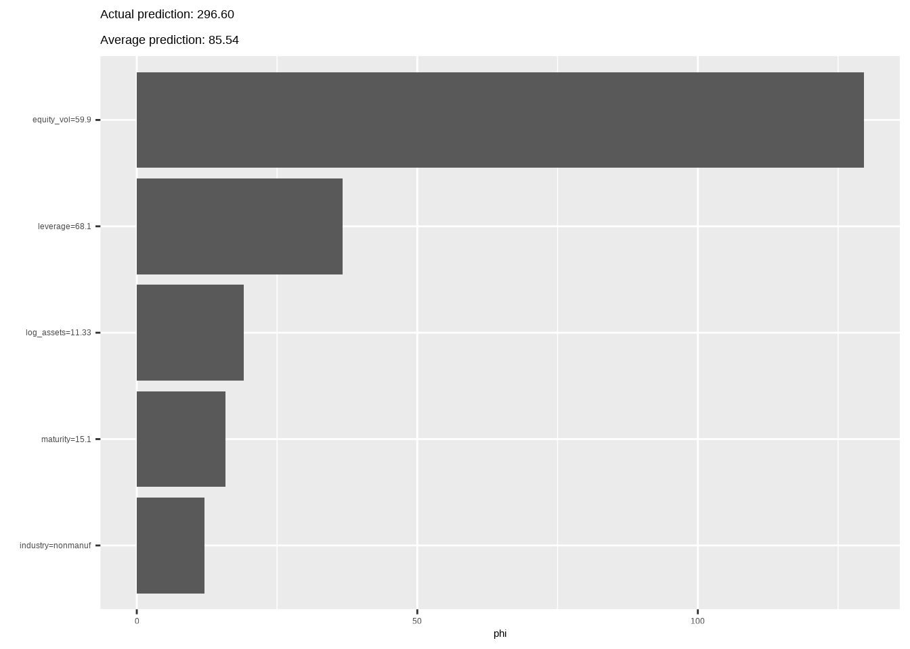
shapley$results
#> feature phi phi.var feature.value
#> 1 leverage 36.70743 789.7522 leverage=68.1
#> 2 equity_vol 129.57110 1791.3370 equity_vol=59.9
#> 3 maturity 15.83133 229.0063 maturity=15.1
#> 4 log_assets 19.11607 244.2515 log_assets=11.33
#> 5 industry 12.10461 413.0221 industry=nonmanufスプレッドが最も大きい銘柄 (実績 399bp) は, ボラティリティ (59.9%) とレバレッジ (68.1%) がともに高く, ボラティリティ (約 +130bp) とレバレッジ (約 +37bp) の寄与が大きい. 1番目の銘柄と違い, レバレッジもスプレッドを押し上げている.
この例からは, 次の2点も読み取れる.
- ランダムフォレストの予測値 (約297bp) は実績 (399bp) よりかなり小さい. ランダムフォレストは多数の木の予測の平均なので, 極端な値は平均の方向に引き寄せられやすい.
- 総資産 (対数で 11.33, 中央値より大きい) の寄与が約 +19bp とプラスになっている. 生成モデルでは企業規模が大きいほどスプレッドは小さい (この銘柄では約 −2bp) ので, 直感と逆である. ただし
phi.varは約244 (標準偏差で約16bp) と大きく, 0 と区別できない. 符号が直感と逆の Shapley 値を見たときは, まず推定の誤差 (phi.var) を確認し, 必要ならsample.sizeを大きくして再計算する.
注) x.interest をコンストラクタShapley$new()に渡した時点で Shapley 値が計算され, shapley$results に格納される. $explain() は, 別のデータ点を後から説明したいときに使うメソッドである.
大域的な説明
多数のデータ点で Shapley 値を計算し, その絶対値の平均をとると, 特徴量の (大域的な) 重要度になる. 計算に時間がかかるので, ここでは50銘柄だけで計算する.
set.seed(333)
idx <- sample(nrow(X), 50)
shap_all <- map_dfr(idx, function(i) {
shapley$explain(x.interest = X[i, ])
shapley$results %>% mutate(id = i)
})
shap_all %>%
group_by(feature) %>%
dplyr::summarise(mean_abs_phi = mean(abs(phi))) %>% # dplyr:: を明示 (下の注を参照)
arrange(desc(mean_abs_phi))
#> # A tibble: 5 × 2
#> feature mean_abs_phi
#> <chr> <dbl>
#> 1 equity_vol 20.8
#> 2 leverage 10.3
#> 3 maturity 3.70
#> 4 industry 3.32
#> 5 log_assets 3.30上位2つ (ボラティリティ, レバレッジ) は PFI と同じである. 残りの3つは, PFI でも SHAP でも重要度が小さく互いに近いので, 順位の違いに大きな意味はない (50銘柄の標本や, モンテカルロ近似の誤差で入れ替わりうる). PFI は「その特徴量の情報を失うと予測がどれだけ悪くなるか」, SHAP の絶対値の平均は「その特徴量が予測値をどれだけ動かしているか」を測るもので, 考え方は異なるが, 重要な特徴量については結論が一致することが多い.
注) summarise() に dplyr:: を付けているのは, パッケージplyrが読み込まれていると (例えば, パッケージcaretで勾配ブースティング (method = "gbm") を使った後など), summarise() が plyr の同名の関数になり, group_by() が無視されて全体の平均が1行だけ表示されてしまうためである. 意図しない結果になったときは, 関数名の衝突 (一般化加法モデルの章を参照) を疑うとよい.
15.6 2値分類問題
データ: クレジットカードの延滞 (仮想データ)
card_default.csv: 3,000件
- default: 延滞 (yes / no) (目的変数). 延滞は全体の約6.5%
- limit: 利用枠 (万円), util: 利用率 (%), delay: 直近6か月の支払遅延回数, age: 年齢,
income: 年収 (万円), cash_ratio: キャッシング比率 (%), tenure: 会員年数, n_cards: 保有カード枚数card <- read.csv("class/card_default.csv", stringsAsFactors = TRUE)
card$default <- factor(card$default, levels = c("no", "yes"))
set.seed(50)
train_idx <- sample(nrow(card), 2000) # 学習用 2,000件, テスト用 1,000件
card_train <- card[train_idx, ]
card_test <- card[-train_idx, ]
set.seed(123)
fit_rf2 <- randomForest(default ~ ., data = card_train, ntree = 300)
fit_rf2
#>
#> Call:
#> randomForest(formula = default ~ ., data = card_train, ntree = 300)
#> Type of random forest: classification
#> Number of trees: 300
#> No. of variables tried at each split: 2
#>
#> OOB estimate of error rate: 4.85%
#> Confusion matrix:
#> no yes class.error
#> no 1854 18 0.009615385
#> yes 79 49 0.617187500延滞確率の説明
延滞 (yes) の確率を説明の対象にする (type = "prob", class = "yes").
解釈にはテストデータを使う (学習データでは, ランダムフォレストの予測は学習データに過剰に適合しているため).
X2 <- card_test %>%
dplyr::select(-default)
y2 <- as.numeric(card_test$default == "yes") # 1: 延滞, 0: 延滞なし
pred_card <- Predictor$new(fit_rf2, data = X2, y = y2, type = "prob", class = "yes")PFI の損失関数には, 交差エントロピー (対数損失) を使う. 予測確率が 0 や 1 になると交差エントロピーが無限大になるので, 0.001〜0.999 に切り詰めた関数を自作して渡す.
log_loss <- function(actual, predicted) {
p <- pmin(pmax(predicted, 0.001), 0.999)
-mean(actual * log(p) + (1 - actual) * log(1 - p))
}
set.seed(111)
imp2 <- FeatureImp$new(pred_card, loss = log_loss, n.repetitions = 5)
imp2$plot()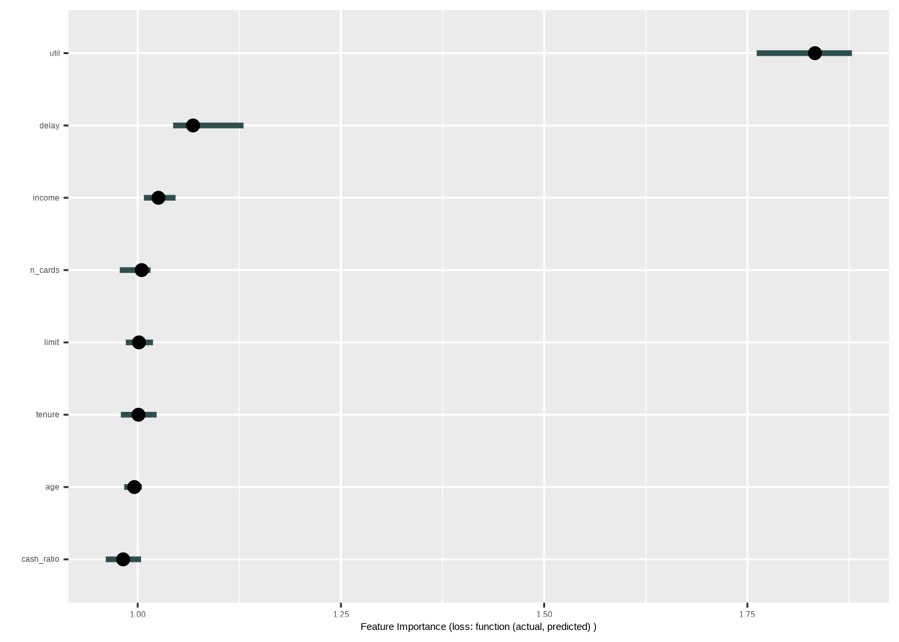
imp2$results
#> feature importance.05 importance importance.95 permutation.error
#> 1 util 1.7614046 1.8331339 1.878579 0.3027291
#> 2 delay 1.0435925 1.0680454 1.130226 0.1763802
#> 3 income 1.0076072 1.0254664 1.046572 0.1693486
#> 4 n_cards 0.9779199 1.0049006 1.015768 0.1659523
#> 5 limit 0.9853763 1.0015278 1.018784 0.1653952
#> 6 tenure 0.9792463 1.0009014 1.023274 0.1652918
#> 7 age 0.9833249 0.9958311 1.005027 0.1644545
#> 8 cash_ratio 0.9606864 0.9820700 1.004136 0.1621819利用率 (util) の重要度が突出して大きく, 次が支払遅延回数 (delay) である.
その他の特徴量は重要度がほぼ 1 (1 を下回るものもあるが, 並べ替えの乱数による誤差) で, このモデルの予測にはほとんど寄与していない.
PDP で, 利用率, 年齢と延滞確率の関係を見る.
pdp_util <- FeatureEffect$new(pred_card, feature = "util", method = "pdp", grid.size = 20)
pdp_util$plot()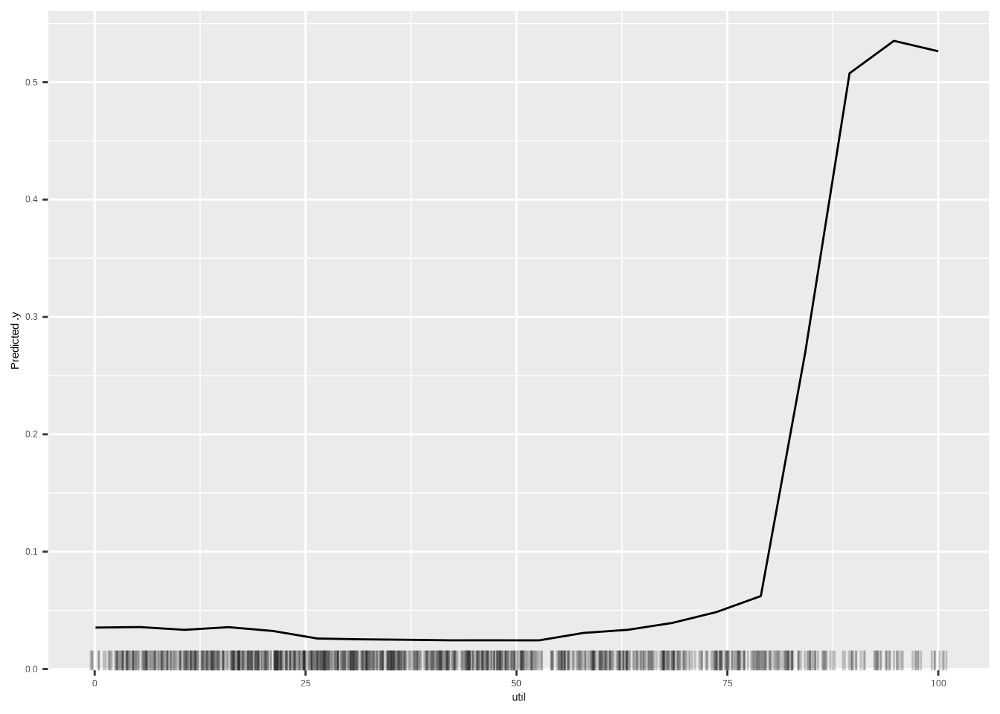
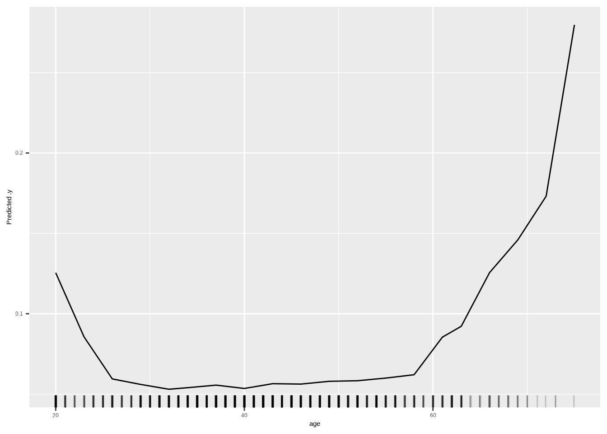
- 利用率: 70%程度までは延滞確率は 2〜5%程度でほぼ一定だが, 80%を超えると急に上がり, 85%前後で約27%, 90%以上では約50%になる. 利用枠の上限近くまで使っている顧客は, 資金繰りに余裕がない (流動性の制約に直面している) と考えられ, 実際の与信審査 (クレジット・スコアリング) でも, リボルビング枠の利用率は代表的な説明変数である.
- 年齢: 20代前半と60歳以上で延滞確率が高く, その間はほぼ一定の U 字型である. 若年層は所得が不安定で信用履歴が短い, 高齢層は退職による所得の減少, といった解釈が考えられる. ただし, 両端はデータが少なく (年齢は 20〜75歳に分布し, 中心は40歳前後), PDP の推定は不安定である. また, 年齢のような属性を与信判断に使うことには, 公平性の観点から慎重な検討が必要である.
個別の顧客の説明
延滞確率が最も高いと予測された顧客について, SHAP で理由を分解する.
p_yes <- predict(fit_rf2, newdata = X2, type = "prob")[, "yes"] # テストデータの予測確率
i_hi <- which.max(p_yes)
p_yes[i_hi]
#> 1682
#> 0.88
X2[i_hi, ]
#> limit util delay age income cash_ratio tenure n_cards
#> 1682 100 94.1 2 52 361 25.8 2.2 2
set.seed(222)
shap_card <- Shapley$new(pred_card, x.interest = X2[i_hi, ], sample.size = 100)
shap_card$plot()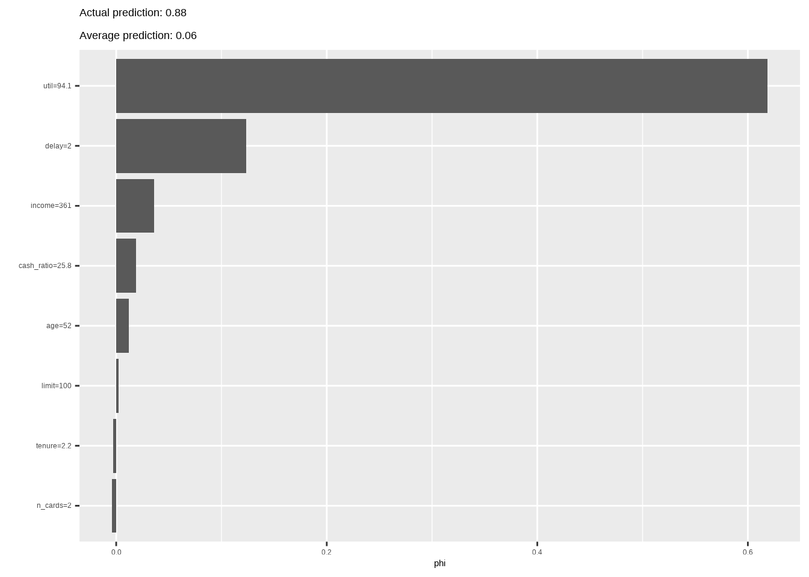
shap_card$results
#> feature phi phi.var feature.value
#> 1 limit 0.002066667 0.0006744736 limit=100
#> 2 util 0.618600000 0.0492828687 util=94.1
#> 3 delay 0.123433333 0.0170431998 delay=2
#> 4 age 0.011866667 0.0015848081 age=52
#> 5 income 0.035933333 0.0040338002 income=361
#> 6 cash_ratio 0.018800000 0.0014315421 cash_ratio=25.8
#> 7 tenure -0.002733333 0.0010573244 tenure=2.2
#> 8 n_cards -0.003766667 0.0010513255 n_cards=2この顧客の延滞確率の予測値は約88%で, 平均的な予測値 (約6%) を大きく上回る. その内訳の大部分は, 利用率 (94.1%) の寄与 (約 +62%ポイント) で, 次いで直近6か月の支払遅延 (2回) の寄与 (約 +12%ポイント) が大きい. 年収 (361万円, 中央値の約440万円より低い) やキャッシング比率 (25.8%, 中央値の約15%より高い) は, 小さなプラスの寄与である.
自主課題
- この顧客の延滞確率が高い理由を, 顧客に説明するとしたらどう伝えるか? (説明可能性・説明責任: 与信判断の理由の開示)
ヒント: 顧客が自分で変えられる要因 (利用率, 支払遅延) と, 変えられない要因 (年齢など) を区別して考えよう. 例えば, 利用率を 80%未満に下げると, 予測される延滞確率はどう変わるか? (
X2[i_hi, ]のutilを書き換えてpredict()してみよう. このような説明は「反実仮想的な説明 (counterfactual explanation)」と呼ばれる) - 年齢を特徴量から除いたモデルを学習し, 予測精度や説明がどう変わるか確かめよう.
15.7 多値分類問題
データ: 社債発行体の格付 (仮想データ)
判別分析の章と同じデータである.
rating.csv: 600社
- rating: 格付 (A / BBB / HY) (目的変数)
- mcap, debt_ebitda, int_coverage, roa, equity_ratio, equity_vol (財務指標など)決定木と SHAP
ここでは, それ自体が「解釈可能なモデル」(ホワイトボックス・モデル) である決定木に SHAP を適用して, その出力を確認する.
library(rpart)
library(rpart.plot)
rating <- read.csv("class/rating.csv", stringsAsFactors = TRUE)
rating$rating <- factor(rating$rating, levels = c("A", "BBB", "HY"))
set.seed(123)
fit_rpart <- rpart(rating ~ ., data = rating)
rpart.plot(fit_rpart, digits = 3)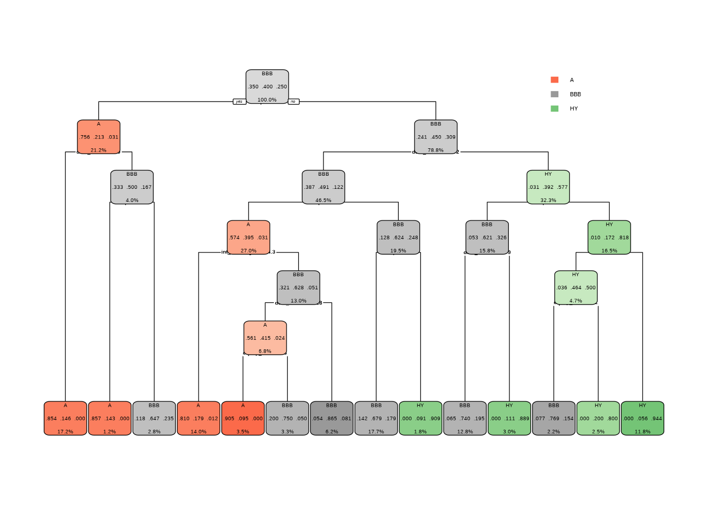
最初の分岐は時価総額 (mcap), 次が負債 / EBITDA 倍率 (debt_ebitda) で, 「企業規模」と「レバレッジ (債務の返済能力)」で格付が大きく分かれる.
格付会社の格付手法でも, 事業規模と財務レバレッジは主要な評価項目であり, 自然な結果である.
各クラスの予測確率に対する Shapley 値は, 3クラス分を同時に表示できる. HY の企業の例:
X3 <- rating %>%
dplyr::select(-rating)
pred_rt <- Predictor$new(fit_rpart, data = X3, type = "prob")
i_hy <- which(rating$rating == "HY")[1]
predict(fit_rpart, rating[i_hy, ])
#> A BBB HY
#> 4 0 0.05633803 0.943662
set.seed(222)
shap_rt <- Shapley$new(pred_rt, x.interest = X3[i_hy, ])
shap_rt$plot()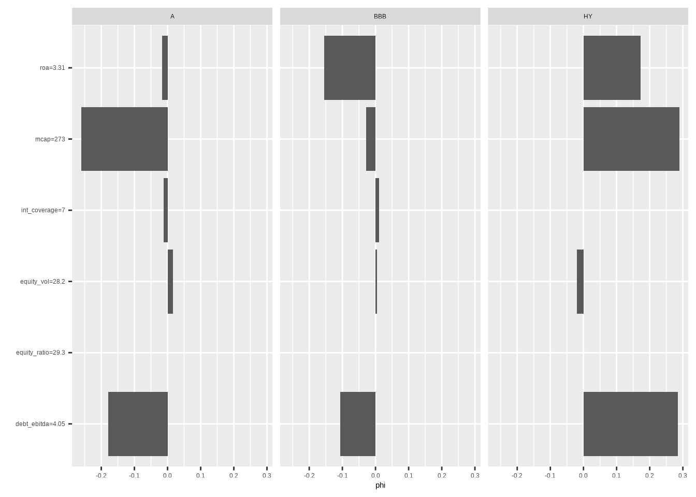
shap_rt$results %>%
filter(class == "HY")
#> feature class phi phi.var feature.value
#> 1 mcap HY 0.2892665363 1.627078e-01 mcap=273
#> 2 debt_ebitda HY 0.2854742750 1.372134e-01 debt_ebitda=4.05
#> 3 int_coverage HY 0.0007619048 2.873176e-05 int_coverage=7
#> 4 roa HY 0.1716078007 1.034103e-01 roa=3.31
#> 5 equity_ratio HY 0.0000000000 0.000000e+00 equity_ratio=29.3
#> 6 equity_vol HY -0.0203846154 1.228274e-02 equity_vol=28.2この企業 (時価総額 273, 負債 / EBITDA 4.05倍, ROA 3.31%) は, 決定木で HY の確率が約94%と予測されている (平均的な HY の確率は 25%). HY の確率を押し上げているのは, 時価総額が小さいこと (約 +0.29), 負債 / EBITDA 倍率が高いこと (約 +0.29), ROA が低いこと (約 +0.17) で, 「規模が小さく, レバレッジが高く, 収益性が低い」という, ハイイールド企業の典型的な姿である. インタレスト・カバレッジ・レシオ (7倍) は, この企業がたどる木の経路で使われていないので, 寄与はほぼ 0 である.
なお, 3クラスの確率の合計は常に 1 なので, 各特徴量の Shapley 値を3クラスについて足すと 0 になる (例えば時価総額は, A で約 −0.26, BBB で約 −0.03, HY で約 +0.29). HY の確率を押し上げる特徴量は, A や BBB の確率を押し下げている.
1つのクラス (HY か否か) に絞る場合は, class = "HY" を指定する.
pred_hy <- Predictor$new(fit_rpart, data = X3, type = "prob", class = "HY")
set.seed(222)
shap_hy <- Shapley$new(pred_hy, x.interest = X3[i_hy, ])
shap_hy$plot()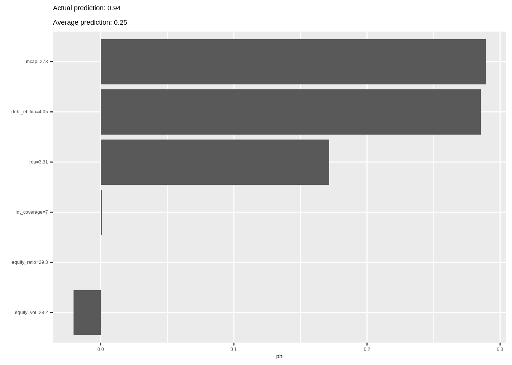
自己資本比率 (equity_ratio) のように, 決定木のどの分岐にも使われていない変数の Shapley 値は, ちょうど 0 になる.
一方, 株価ボラティリティ (equity_vol) は, この企業がたどる経路では使われていないが, 木の別の分岐では使われているので, Shapley 値は小さいが 0 ではない.
Shapley 値の計算では, 他の特徴量の値を別のデータ点の値に置き換えた組合せも評価するので, その組合せでは別の経路をたどり, そこで使われる変数にも寄与が配分されるためである.